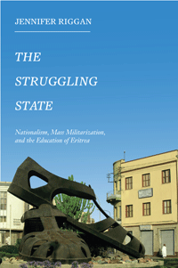

<HTML><head>
<meta name='robots' content='noindex,nofollow' /><script> (function(i,s,o,g,r,a,m){i['GoogleAnalyticsObject']=r;i[r]=i[r]||function(){  (i[r].q=i[r].q||[]).push(arguments)},i[r].l=1*new Date();a=s.createElement(o),  m=s.getElementsByTagName(o)[0];a.async=1;a.src=g;m.parentNode.insertBefore(a,m)   })(window,document,'script','//www.google-analytics.com/analytics.js','ga');   ga('create', 'UA-43183130-1', 'temple.edu');   ga('send', 'pageview'); </script><title>Jennifer Riggan: The Struggling State - Print</TITLE><link rel="stylesheet" href="../general.css" type="text/css"><SCRIPT LANGUAGE = JAVASCRIPT></SCRIPT></HEAD><BODY LINK="#3152A5" VLINK="#3152A5" ALINK=Gray BGCOLOR=White><CENTER><P CLASS=intro><br>Examining Eritrean teachers' paradoxical role of educating students forced into the military<br><br></P></CENTER><br>&nbsp;<!--none//--><Table width="100%" border=0 cellspacing=5><tr><td width="175" align="center"></td><td>
<h1 class = "booktitle">The Struggling State</h1> 
<h1 class = "subtitle">Nationalism, Mass Militarization, and the Education of Eritrea</h1>
<h3 class="author">Jennifer Riggan </h3>
<p class="info">
<p class="info">cloth EAN:  978-1-4399-1270-6
</br>$69.50, Jan 16, <font color=#990033>Available</font>
<br>
<p class="info">Electronic Book EAN: 978-1-4399-1272-0
</br>$35.00, Jan 16, <font color=#990033>Available</font>
<br>
<p class="info">258 pp, 6 x  9, 
</p>
</td>
</tr>
</table>
</P>
</td>
</tr>
</table>
<BR>
	
	<p class="award"><P><font color="#996633">Honorable Mention for the 2018 Jackie Kirk Outstanding Book Award from The Comparative and International Education Society</font></P>
		
<BLOCKQUOTE><p>"The Struggling State <i> makes important connections between schools as public institutions that create citizens and processes of militarization that similarly construct national subjects and define their relationship to the state. Riggan explores the role of public education and contests over the purposes that intellectual training should serve. A significant and interesting contribution, this ethnography provides a glimpse of everyday realities usually hidden behind official statements and national propaganda of the ruling party or behind the alarming summary reports of Human Rights Watch and other non-governmental organizations</i>."<br/>&#8212;<b>Victoria Berna</b>l, Professor of Anthropology at the University of California, Irvine<br>
</BLOCKQUOTE>
<P>
<p>A 2003 law in Eritrea, a notoriously closed-off, heavily militarized, and authoritarian country, mandated an additional year of school for all children and stipulated that the classes be held at Sawa, the nation's military training center. As a result, educational institutions were directly implicated in the making of soldiers, putting Eritrean teachers in the untenable position of having to navigate between their devotion to educating the nation and their discontent with their role in the government program of mass militarization.
<br/>
<br/>In her provocative ethnography, <i>The Struggling State, </i>Jennifer Riggan examines the contradictions of state power as simultaneously oppressive to and enacted by teachers. Riggan, who conducted participant observation with teachers in and out of schools, explores the tenuous hyphen between nation and state under lived conditions of everyday authoritarianism.
<br/>
<br/> 
<i>The Struggling State </i>shows how the hopes of Eritrean teachers and students for the future of their nation have turned to a hopelessness in which they cannot imagine a future at all.
<br>
<P CLASS="top"><A HREF="#top">BACK TO TOP</A>
</P>
</p>
<P><h2  class="inpageheading">
<A NAME="excerpt"></a>Excerpt</h2>
<p>
Read an excerpt from the Introduction (pdf).
<br>
<P CLASS="top"><A HREF="#top">BACK TO TOP</A>
</P>
</P>
<P><h2  class="inpageheading"><A NAME="reviews"></a>Reviews</h2>
<p>"The Struggling State <i> is a fascinating long-term and in-depth study of the work and perceptions of public school teachers in Eritrea. Riggan has a solid understanding of the complex historical, political, and social context. Writing from a unique perspective, she digs deep into not only the role of teachers in this process but also their perception of themselves as citizens, as leaders, and as guardians of the values of the nation (not necessarily the state). Riggan's methodology and detailed discussions of how the state has used militarization and education to foment the twin ideas of Eritrean exceptionalism and the merit of martyrdom make this book stand out</i>."
<br/>&#8212;<b>Pamela DeLargy</b>, Office of the UN Special Representative for Migration
<br>
<p>
<i>"</i><i>(F)resh and insightful... Riggan's fine-grained accounts of fieldwork...provide important insights into the effects of state power and how authoritarianism functions in post-liberation states.... An important contribution to Eritrean studies, Riggan's study offers the sort of nuance and detail that is rare in Eritrean studies post-2001, but which, for that reason, is all the more needed.... It deserves a wide audience."
<br/>&#8212;</i><b>African Conflict & Peacebuilding Review
</b>
<br>
	<p>
	<i>"Riggan critically analyses the Eritrean governments' policy of societal militarisation and its impact on educational sector....  I am highly impressed by Riggan's in-depth analysis and her detailed insights concerning the authoritarian state and its violent and punitive character. Her study illustrates how the introduction of indefinite national service has negatively affected education, social capital formation and the nation-building and development processes. Riggan shows a high level of scholarship and thorough knowledge of her subject matter.... I highly recommend this book"</i><br>
&#8212;<b><i>Journal of Modern African Studies</i></b>
<br>
<p><i>"</i>The Struggling State <i>... provides excellent nuances on contemporary realities of the youth and the education system in Eritrea... (A) valuable addition to the body of critical literature about governance and politics in Eritrea. It provides a vivid depiction of the lived experience...and the school system that has not been given due attention despite its relevance.... The book also adds vital insights for those who seek to understand complex factors that are the driving forces behind the mass exodus of Eritrean youth, and how they are denied the agencies of their bodies, time and free thinking."<br/></i>
&#8212;<b><i>PEN Eritrea</i></b>
<br>
<p><i>"(Riggan) has detailed knowledge about her setting from an insider's perspective...which is a great strength of the book.... Riggan successfully captures in vivid detail the politicization of everyday life... The book, thus, makes an important contribution to the study of Eritrean nationalism and its discontents, and the way Riggan weaves her own personal history with Eritrea and Eritreans into her narrative without being outright judgmental makes it even more valuable. Its ethnographic content is of particular value for advancing the study of Eritrean nationalism and how it relates to the statemaking project of its ruling elite, in particular in relation to the definition of national duty.... (Riggan) provides an important glimpse into patterns of compliance and resistance in a highly authoritarian and often oppressive political environment."</i>
<br/>
	&#8212;<b><i>Anthropological Quarterly</i></b><br>
	<P CLASS="top"><A HREF="#top">BACK TO TOP</A></P></b></p><p>
	<h2 class="inpageheading"><A NAME="contents"></a>
	Contents</h2><P><span style="font-family: 'Verdana';font-size: 13px;" >Acknowledgments<br/><br/> 
	Introduction: Everyday Authoritarianism, Teachers, and the Decoupling of Nation and State<br/>1. Struggling for the Nation: Contradictions of Revolutionary Nationalism<br/>2. &ldquo;It Seemed like a Punishment&rdquo;: Coercive State Effects and the Maddening State<br/>3. Students or Soldiers? Troubled State Technologies and the Imagined Future of Educated Eritrea<br/>4. Educating Eritrea: Disorder, Disruption, and Remaking the Nation<br/>5. The Teacher State: Morality and Everyday Sovereignty over Schools<br/> Conclusion: Escape, Encampment, and the Alchemy of Nationalism<br/><br/> Notes<br/> References<br/> Index</span></P>
	<P CLASS="top"><A HREF="#top">BACK TO TOP</A></P></p>
	<P><H2  class="inpageheading">
	<A NAME="author bio"></a>About the Author(s)</H2>
	<p>
		<b>Jennifer Riggan </b>is Associate Professor of International Studies in the Department of Historical and Political Studies at Arcadia University.<br></p>
	<P CLASS="top"><A HREF="#top">BACK TO TOP</A></P></P></P>
	<P><h2 class="inpageheading">
	<a name="subjects"></a>Subject Categories</h2> 
	<p><a href="http://www.temple.edu/tempress/african_studies.html" target="_top">African Studies</a> <br>
	<a href="http://www.temple.edu/tempress/anthropology.html" target="_top">Anthropology</a> <br>
	<a href="http://www.temple.edu/tempress/education.html" target="_top">Education</a> <br>
	<a href="http://www.temple.edu/tempress/political.html" target="_top">Political Science and Public Policy</a> <br>
	<a href="" target="_top"></a> </p>
	</P>
	<P>
	</P>
	<P CLASS="top"><A HREF="#top">BACK TO TOP</A></P></td><td width=2%>&nbsp;</td><td width=5>&nbsp;</td></tr></table><BR><font face="Arial" size="1"><a href="copyright.html" OnMouseOver="window.status='Web Copyright Policy';return true;" OnMouseOut="window.status=''" TITLE="Web Copyright Policy">&copy;</a> 2016 <a href="http://www.temple.edu" target="new" OnMouseOver="window.status='Link to Temple University home page';return true;" OnMouseOut="window.status=''" TITLE="Link to Temple University home page">Temple University</a>. All Rights Reserved. This page: http://www.temple.edu/tempress/titles/2371_reg.html</font></BODY></HTML>                       
